Copy Prompts & View Subjects from Any Angle
The example images was generated with Krea 2 Turbo Checkpoint together with Qwen VAE + text encoder, no LoRAs.
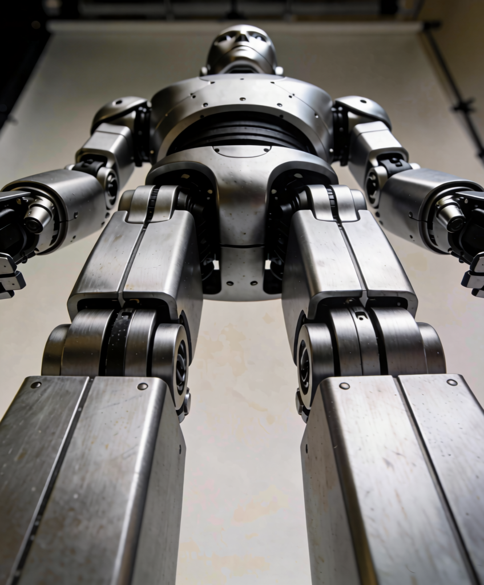
Extreme low angle
Floor ZeroExtreme low angle shot as if the viewer is lying on the ground a short distance in front of the subject, looking steeply upward, the legs and inner thighs are the closest and largest part of the frame, the stomach and lower torso are visible above the legs, the chest, shoulders, and head recede into the distance and appear progressively smaller, the face is visible at the top of frame though small and distant, extreme foreshortening throughout, subject stands perfectly straight and vertical with legs fully extended.

Worm's eye view
Steep -80°Wide-angle lens positioned at ground level, camera tilted steeply upward at a near 80 degree angle toward the subject's face, extreme perspective distortion, feet and legs dramatically enlarged and dominant in the lower two-thirds of frame, torso rapidly shrinking in size moving up the frame, head small and distant at the very top of frame, dramatic vertical convergence, subject facing the camera directly.
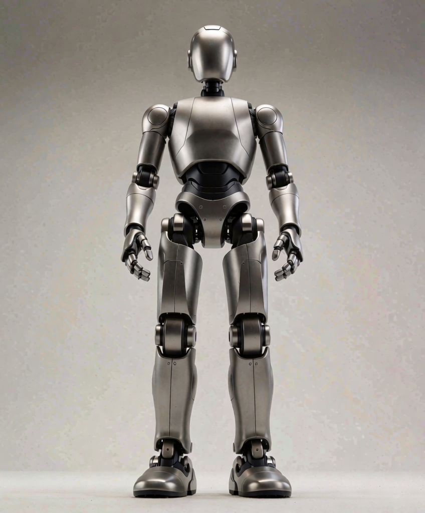
Low angle view
Tilt -30°Camera positioned near the ground below waist height, pointed upward toward the subject, feet and legs appear noticeably larger and closer in the lower portion of frame, torso appears progressively smaller moving upward, head appears smallest near the top of frame, entire figure fully visible in frame from feet to head, subject facing the camera directly.
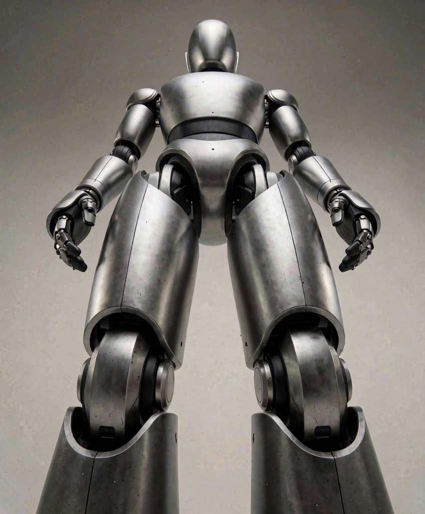
Knee level
35° TiltWide-angle lens positioned at knee height, camera tilted upward at a moderate 35 degree angle toward the subject's face, noticeable perspective distortion, knees and thighs enlarged and prominent in the lower two-thirds of frame, torso gradually shrinking in size moving up the frame, head smaller near the top of frame, clear vertical convergence, subject facing the camera directly.
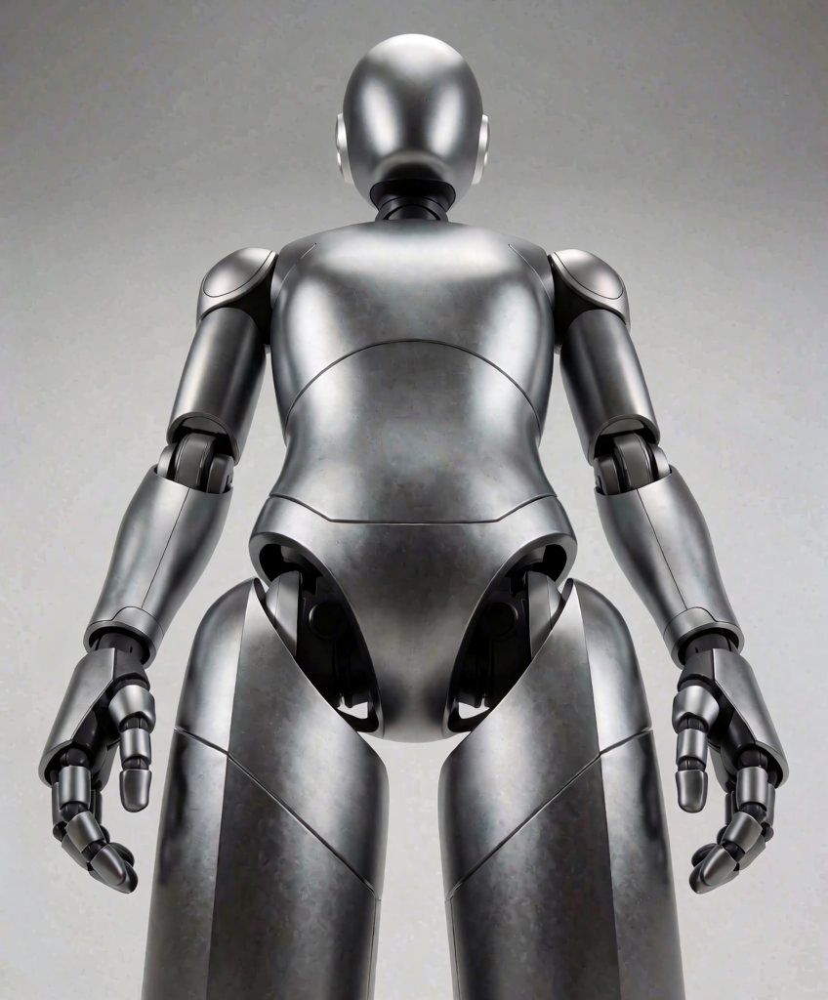
Knee / thigh / hip level
35° TiltWide-angle lens positioned at hip height, camera tilted upward at a moderate 35 degree angle toward the subject's face, noticeable perspective distortion, hips and thighs enlarged and prominent in the lower two-thirds of frame, torso gradually shrinking in size moving up the frame, head smaller near the top of frame, clear vertical convergence, subject facing the camera directly.
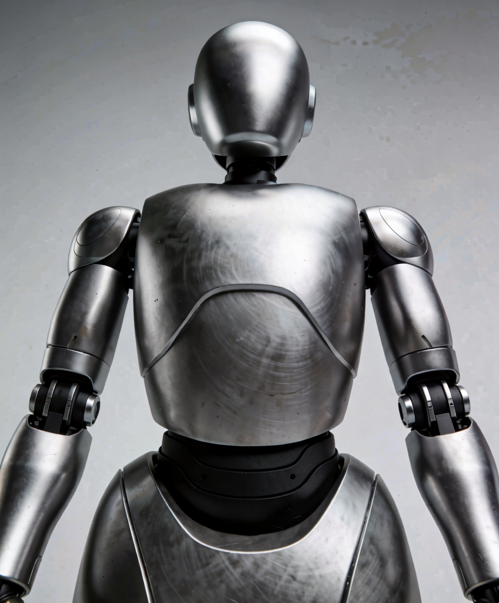
Waist level
Torso FrameWide-angle lens positioned at waist height, tight close-up framing where the torso fills most of the frame, camera tilted upward at a moderate 30 degree angle toward the subject's face, moderate perspective distortion, waist and hips noticeably enlarged in the lower half of frame, torso gradually shrinking in size moving up toward the head, head clearly visible and somewhat smaller near the top of frame, moderate vertical convergence, subject facing the camera directly.
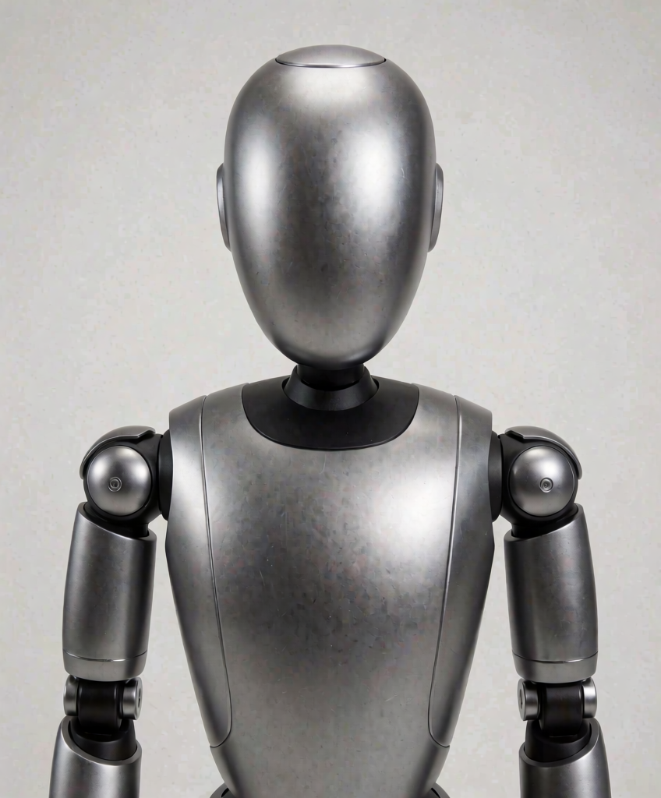
Chest level
Natural PlanarWide-angle lens positioned at shoulder height, close-up framing where the head, shoulders, and upper chest fill most of the frame, camera aimed nearly straight ahead with minimal tilt, natural undistorted proportions, head clearly and fully visible including the top of the head, near the top of frame, subject facing the camera directly.
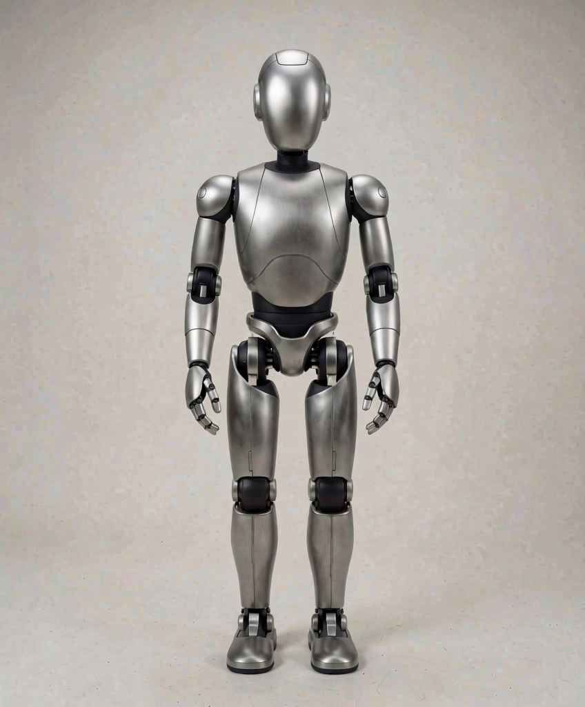
Full body, eye level
Baseline 0°Wide-angle lens positioned at eye height, camera aimed straight ahead with no upward or downward tilt, entire figure fully visible in frame from feet to head, natural undistorted proportions throughout the body, subject facing the camera directly.
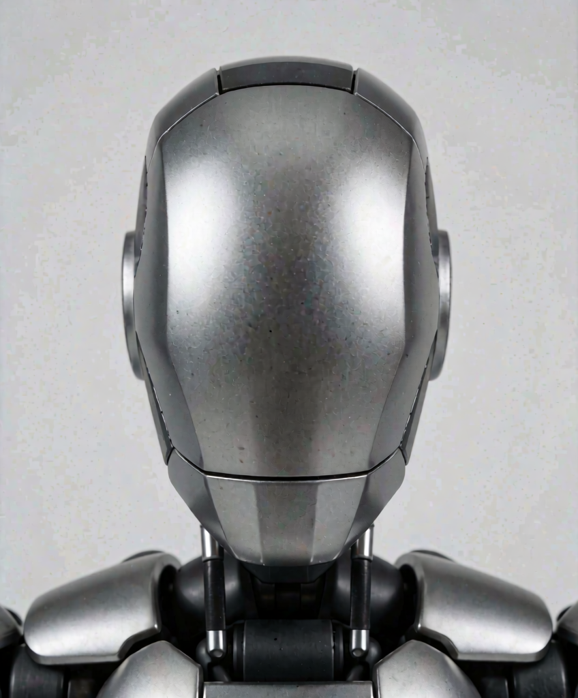
Eye level, close-up
50mm CropWide-angle lens positioned at eye height, camera aimed straight ahead with no upward or downward tilt, portrait framing showing only the head and shoulders, frame is cropped at the top of the chest so nothing below the shoulders is visible, natural undistorted proportions.
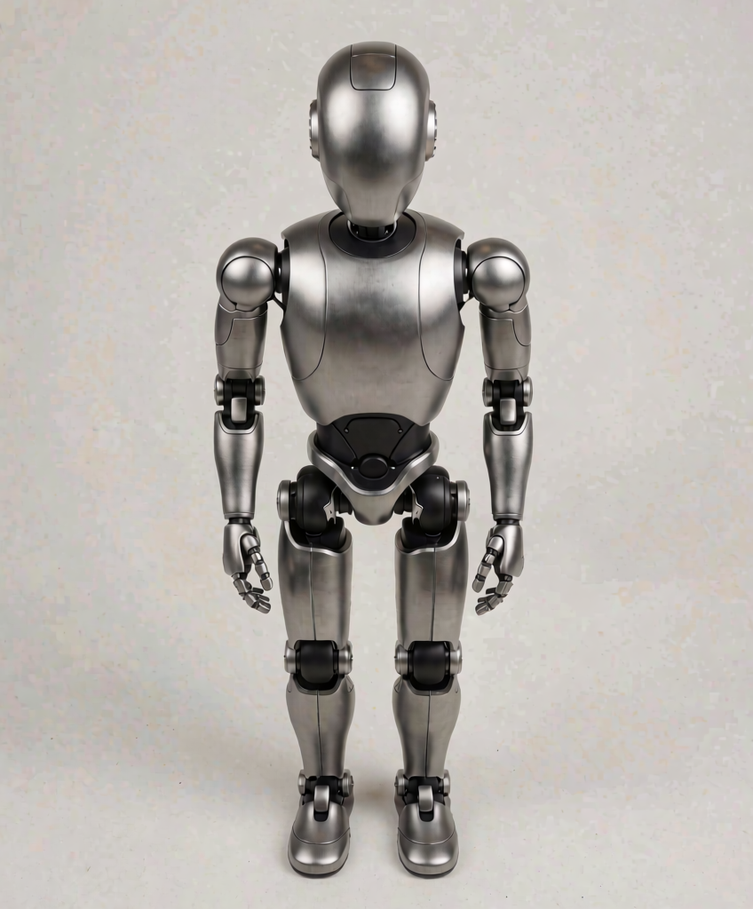
High angle view
+35° TiltCamera positioned slightly above the subject's head, pointed downward at a shallow angle, head and shoulders appear only slightly larger near the top of frame, torso appears close to normal proportion through the middle, feet remain close to normal size near the bottom of frame, mild vertical compression, entire figure fully visible in frame from feet to head, subject facing the camera directly.

Bird's eye view
Overhead 80°Wide-angle lens positioned high overhead looking almost straight down at a steep 80 degree downward angle, extreme perspective distortion, head and shoulders dramatically enlarged and dominant filling most of the frame, torso rapidly shrinking in size moving down the frame, legs and feet small and distant near the bottom of frame, dramatic vertical compression, entire figure fully visible in frame from feet to head, subject facing the camera directly.
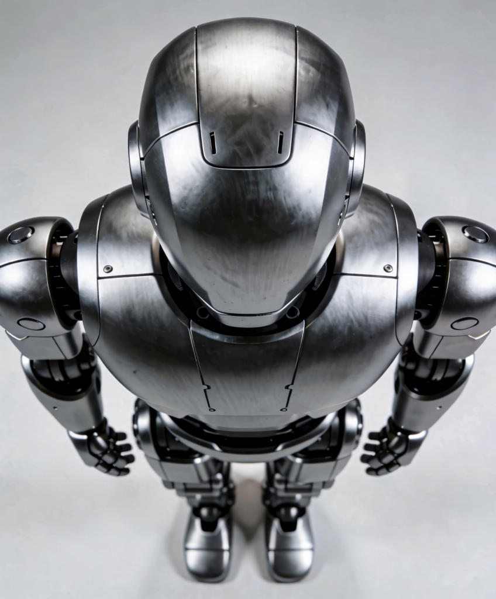
Extreme high angle
Nadir InverseExtreme high angle shot as if the viewer is floating a short distance above and in front of the subject, looking steeply downward, the head and shoulders are the closest and largest part of the frame, the chest and upper torso are visible below the shoulders, the stomach, hips, and legs recede into the distance and appear progressively smaller, the feet are visible at the bottom of frame though small and distant, extreme foreshortening throughout, subject stands perfectly straight and vertical with legs fully extended.
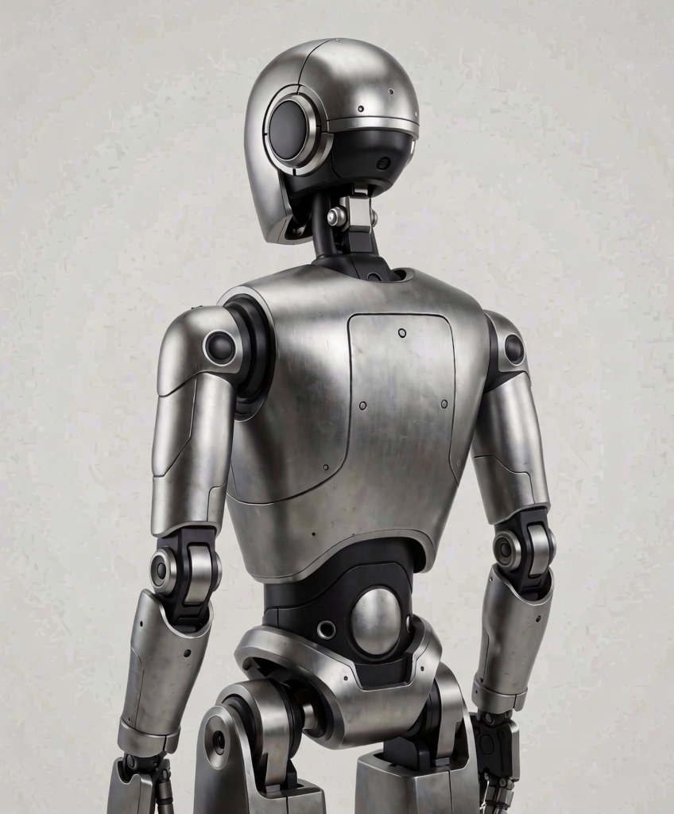
From behind
Full DorsalCamera positioned behind the subject, back of the head and shoulders facing the camera, back and rear of the body clearly visible, no face visible, natural undistorted proportions.
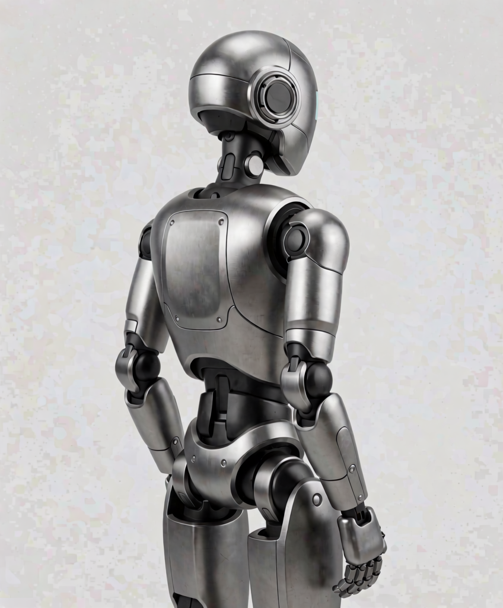
From behind, angled
60° RotationCamera positioned at a moderate angle to the back-side of the subject, roughly 60 degrees rotated from directly facing away from the camera, side of the body dominant but the back of the shoulder and part of the back clearly visible, not a full profile, side of the head visible with part of the back of the head also visible, no face visible.
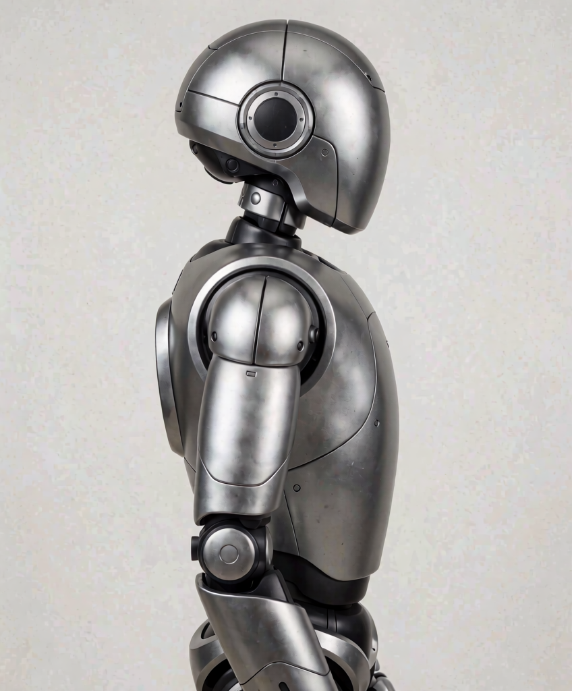
Side view
Orthogonal ProfileCamera positioned mostly to the side of the subject with a slight forward angle, side profile of the body dominant in frame, front of the shoulder and a sliver of the chest visible at the edge, side of the head visible with only a hint of the face.
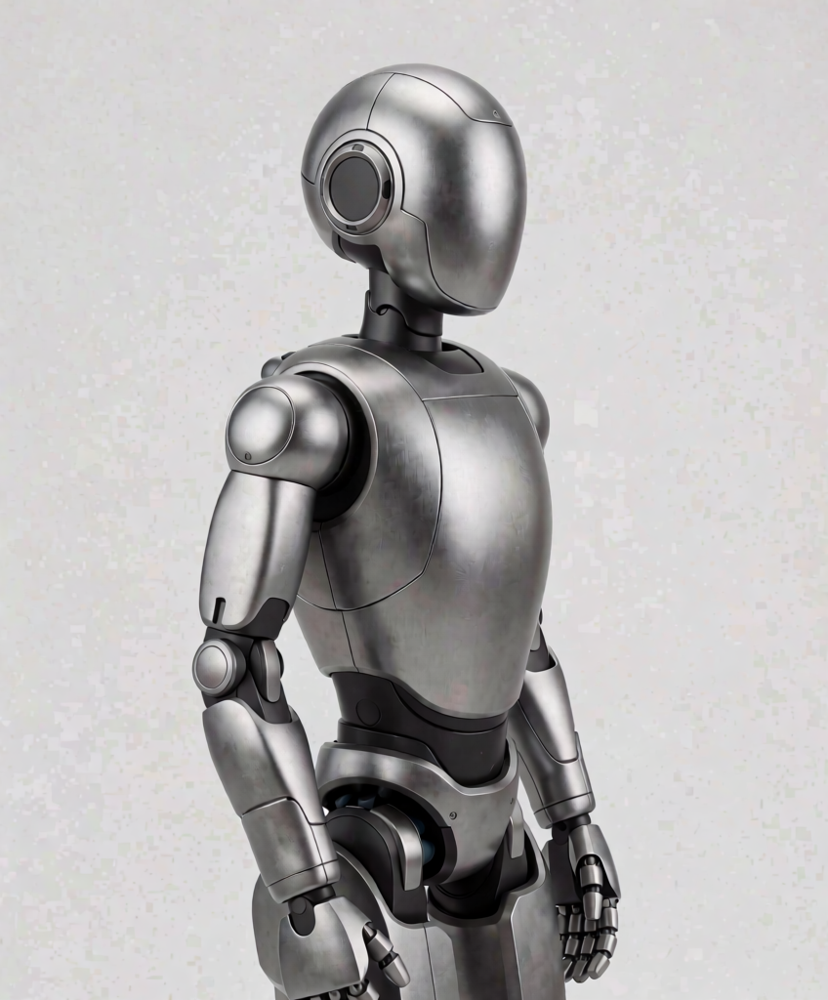
Front side, angled
3/4 AnterolateralCamera positioned at a moderate angle to the front-side of the subject, roughly 60 degrees rotated from directly facing the camera, side of the body dominant but the front of the shoulder and part of the chest clearly visible, not a full profile, side of the head visible with part of the face also visible.
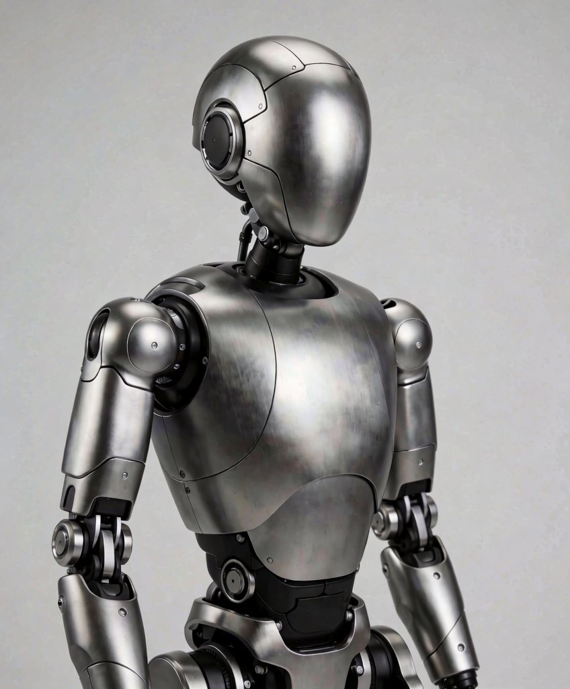
Front side view
Leading ShoulderCamera positioned diagonally in front of and to one side of the subject, front and one side of the body both visible at once, side of the head partially visible with the face dominant, one shoulder closer to camera than the other, face visible.
Frequently Asked Questions
What models was used to create these image examples?
The example images was generated with the default Krea 2 Turbo Checkpoint together with Qwen VAE + text encoder, no LoRAs.
Will these prompts work with other checkpoints or models?
Written for Qwen3-VL, which reads full sentences rather than word tags. They should work on other natural-language models like Qwen-Image, FLUX 1 & 2, SD 3/3.5, and DALL·E 3, but not on CLIP-based, tag-driven models like Pony Diffusion or SDXL/SD1.5.
Do these prompts guarantee consistent angle results every time?
No, AI generation produces different results each time. A fixed seed or a reference image is what keeps results consistent. The same prompt text will produce a slight variation in pose or angle with each generation. These prompts help steer the angle, but they don't guarantee perfect results on their own.
Why was this website created?
I looked all over the internet for angle prompts and never found a simple site like this one. Most places just dump a huge list of prompts for everything, and you have to dig through hundreds of unrelated ones to find the few that actually control the camera angles.
Can I contribute new angle prompts?
Yes, submissions are welcome via GitHub. Open a pull request or issue with your prompt and an example result, and it can be added as a card.